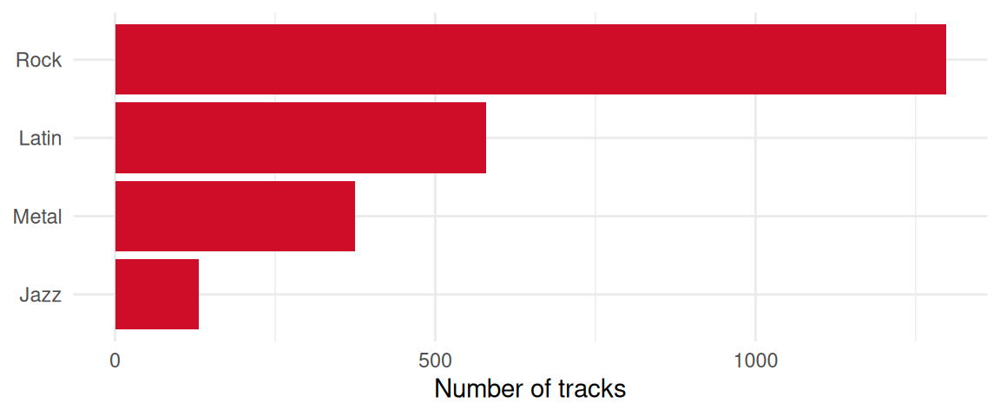

eCH-1234 – Template Quarto Document
Summary
Brief summary of the purpose of the document.
Note
This document uses a gender-neutral formulation when referring to persons. This is based on the guidelines (German) of the Federal Chancellery. Depending on the situation, paired forms (citizens), gender-abstract forms (insured person), gender-neutral forms (insured person) or paraphrases with-out personal reference are used. The generic masculine (citizen) is not permitted. Full forms are used in continuous texts, i.e. in texts consisting of formulated sentences. Short forms can be used in ab-breviated text passages, namely in tables. The short form is used with a slash but without an ellipsis (referent). Gender asterisks and similar spellings are not used.
1 Introduction
1.1 Status
In progress: Use is only permitted within the Technical Unit or the Expert Committee.
1.2 Scope of application
The information in this chapter should provide the reader with a brief overview of what this standard is intended for. Information about the following matters may be helpful here.
1.3 We can have sub-headings
And write some text.
1.3.1 Also sub-sub-headings
And write some more text. Maybe even with a pretty image.

When displaying diagrams, try to write them in Mermaid JS straight away; this makes changes in the future or translations straightforward.
1.4 Formatting
This chapter is a stress test: it contains the common Markdown and Quarto elements so that their rendering in the PDF and on the website can be checked.
1.4.1 Text styling
Text can be bold, italic, underlined, highlighted, in small caps or struck through. Keyboard shortcuts such as Ctrl-CCtrl-C + Ctrl-VCtrl-V and inline code such as schema:name are set off visually.1
1 On the website, footnotes appear in the right margin; in the PDF, at the bottom of the page.
1.4.1.1 A fourth-level heading
Headings down to the fourth level are possible; they are numbered but do not appear in the table of contents.2
2 A second footnote with a link to ech.ch.
1.4.2 Lists and callouts
Unordered list:
- First item
- Second item
- Sub-item
- Third item
Ordered list:
- First step
- Second step
- Third step
Note
A note draws attention to connections that are easily overlooked.
Warning
A warning points out sources of error, for example unchecked input data.
1.4.3 Code, tables and formulas
The following code block shows a SPARQL query:
Figures can also be produced with R code, as Figure 2 shows:
| Column | Type | Remark |
|---|---|---|
| Name | String | Mandatory field |
| Quantity | Decimal number | with unit |
A formula can appear in the text, for example \(E = m c^2\), or as a standalone equation such as Equation 1:
\[ \sum_{i=1}^{n} x_i = n \bar{x} \tag{1}\]
2 Usage notes
The following paragraph is deliberately nonsense and only tests the citation style: according to the approval guideline [eCH-0003 11.1.0], all postal addresses [eCH-0010 8.1.0] must be serialised in Turtle [Turtle], validated as a DCAT catalogue [DCAT; eCH-0200 3.0.1] with SHACL [SHACL] and published via SPARQL [SPARQL] as Linked Open Data [eCH-0205 1.0] on agricultural crops [eCH-0265 1.0.0] in JSON-LD [JSON-LD] and OWL [OWL 2], as the Semantic Web [Berners-Lee 2023] intends.
2.1 Namespaces
Table 2 lists the prefixes and namespaces used in this document. A prefix stands for a namespace IRI, the common beginning of the IRIs of a vocabulary. The Turtle specification describes how such prefixed names are resolved [Turtle].
| Prefix | Namespace |
|---|---|
| : | https://agriculture.ld.admin.ch/eCH-1234/2/ |
| country: | https://ld.admin.ch/country/ |
| rdf: | http://www.w3.org/1999/02/22-rdf-syntax-ns# |
| schema: | http://schema.org/ |
| unit: | http://qudt.org/vocab/unit/ |
| xsd: | http://www.w3.org/2001/XMLSchema# |
3 Data Model
3.1 Genre
A musical category in the Chinook dataset.
3.1.1 Overview
- Shape
- :GenreShape
- Target class
- :Genre
- Closed
- Yes (only the listed properties are allowed)
- Key figures
- 25 instances with 5 to 7 triples each (5.4 on average)
- Data access
- SPARQL service
3.1.2 Properties
| Description | Details | Cardinality |
|---|---|---|
| Name (schema:name) |
|
1..1 |
| Part of (schema:partOf) |
|
0..* |
| Alternate name (schema:alternateName): Translated or colloquial name of the genre, at most one per language. |
|
0..* |
3.1.3 Rules (SPARQL)
3.1.3.1 No cyclic hierarchy
A genre cannot be a part of itself, either directly or transitively.
3.2 Invoice
A purchase receipt in the Chinook dataset. An invoice groups the items of one purchase. The invoice total is not only recorded as a value but also checked against the sum of its items; differences of more than five cents count as errors. Invoices dated before the year 2000 stem from a legacy system and are not permitted in this dataset.
3.2.1 Overview
- Shape
- :InvoiceShape
- Target class
- schema:Invoice
- Closed
- No (further properties are allowed)
- Key figures
- 412 instances with 8 to 21 triples each (12.4 on average)
- Data access
- SPARQL service
3.2.2 Properties
| Description | Details | Cardinality |
|---|---|---|
| Customer (schema:customer): An invoice must be linked to exactly one customer. |
|
1..1 |
| Total payment due (schema:totalPaymentDue): An invoice must define a total payment due as a schema:QuantitativeValue. |
|
1..1 |
| Has part (schema:hasPart): An invoice must have at least one line item (OrderItem). |
|
1..* |
| Date created (schema:dateCreated) |
|
0..* |
3.2.3 Rules (SPARQL)
3.2.3.1 Invoice date
An invoice cannot be dated before the year 2000.
3.2.3.2 Invoice total
Invoice total payment due must exactly match the sum of its lines (within 0.05 tolerance).
SELECT $this
WHERE {
$this schema:totalPaymentDue/schema:value ?invoiceTotal .
{
SELECT $this (SUM(?price * ?qty) AS ?calculatedTotal)
WHERE {
$this schema:hasPart ?line .
?line schema:price/schema:value ?price .
?line schema:orderQuantity/schema:value ?qty .
}
GROUP BY $this
}
FILTER(ABS(?invoiceTotal - ?calculatedTotal) > 0.05)
}3.3 Music album
A collection of tracks in the Chinook dataset.
3.3.1 Overview
- Shape
- :MusicAlbumShape
- Target class
- schema:MusicAlbum
- Closed
- No (further properties are allowed)
- Key figures
- 347 instances with 5 triples each
- Data access
- SPARQL service
3.3.2 Properties
| Description | Details | Cardinality |
|---|---|---|
| Name (schema:name): Every album must have a name. |
|
1..1 |
| Artist (schema:byArtist): Person or music group who created the album. |
|
0..* |
3.4 Music Recording
A single music track in the Chinook dataset.
3.4.1 Overview
- Shape
- :TrackShape
- Target class
- schema:MusicRecording
- Closed
- No (further properties are allowed)
- Key figures
- 3503 instances with 10 to 15 triples each (11.1 on average)
- Data access
- SPARQL service
3.4.2 Properties
| Description | Details | Cardinality |
|---|---|---|
| Name (schema:name): Every track must have a name. |
|
1..1 |
| In Album (schema:inAlbum): A track can only belong to a valid schema:MusicAlbum. |
|
0..* |
| Author (schema:author): The person or group who wrote the track. | 0..* | |
| Genre (schema:genre) |
|
1..1 |
| Duration (schema:duration): Track duration must be expressed as a schema:QuantitativeValue. |
|
0..* |
| Content Size (schema:contentSize) |
|
0..* |
3.5 Organisation
A company or organization in the Chinook dataset.
3.5.1 Overview
- Shape
- :OrganisationShape
- Target class
- schema:Organisation
- Closed
- No (further properties are allowed)
- Data access
- None (transactional data, not part of the published graph)
3.5.2 Properties
| Description | Details | Cardinality |
|---|---|---|
| Name (schema:name): Every organisation must have a name. |
|
1..1 |
3.6 Person
Any person (employee, customer, or custom person) present in the dataset.
Persons are described uniformly regardless of their role: employees of the music store, customers and manually recorded persons share the same properties. The role follows from the relationships, for example schema:worksFor for employees or schema:customer on an invoice for customers.
Names are recorded as the person uses them; academic titles do not belong in the given name. Email addresses and birth dates are optional and rule violations are reported as warnings only.
3.6.1 Overview
- Shape
- :PersonShape
- Target class
- schema:Person
- Closed
- Yes (only the listed properties are allowed)
- Key figures
- 383 instances with 5 to 10 triples each (5.6 on average)
- Data access
- SPARQL service
3.6.2 Properties
| Description | Details | Cardinality |
|---|---|---|
| Given Name (schema:givenName): Every person must have a given name. |
|
1..1 |
| Family Name (schema:familyName): Every person must have a family name. |
|
1..1 |
| Email Address (schema:email): If an email is provided, it must follow a standard email format. |
|
0..* |
| Birth date (schema:birthDate): A person should have a valid birth date. |
|
0..* |
| Address (schema:address) |
|
0..* |
| Works for (schema:worksFor): An employee can report to another person. |
|
0..* |
| Job title (schema:jobTitle) |
|
0..1 |
| knows (schema:knows) |
|
0..* |
3.6.3 Rules (SPARQL)
3.6.3.1 No self-reporting
An employee cannot report to themselves.
3.7 Postal address
The postal address of a person.
Addresses follow the structure of schema.org rather than the Swiss address standard eCH-0010, since the dataset contains mostly foreign addresses. Postal codes are therefore only checked for a plausible format, not against a directory.
3.7.1 Overview
- Shape
- :PostalAddressShape
- Target class
- schema:PostalAddress
- Closed
- Yes (only the listed properties are allowed)
- Key figures
- 67 instances with 6 to 8 triples each (7.5 on average)
- Data access
- SPARQL service
3.7.2 Properties
| Description | Details | Cardinality |
|---|---|---|
| Street address (schema:streetAddress) |
|
1..1 |
| Postal code (schema:postalCode): Letters, digits, spaces and hyphens, two to ten characters. |
|
0..1 |
| Locality (schema:addressLocality): Every address needs exactly one locality. |
|
1..1 |
| Region (schema:addressRegion): Canton, state or province where customary in the country. |
|
0..1 |
| Country (schema:addressCountry): Country as an IRI from the country list of the Swiss Federal Archives on LINDAS (ISO 3166-1 alpha-3). |
|
1..1 |
3.8 Quantitative Value
A numerical value with an associated unit.
Quantitative values are never recorded as a bare number but always together with a unit from the QUDT vocabulary. This keeps it unambiguous whether a duration is meant in milliseconds or a file size in bytes. Negative values are not foreseen in this dataset.
3.8.1 Overview
- Shape
- :QuantitativeValueShape
- Target class
- schema:QuantitativeValue
- Closed
- Yes (only the listed properties are allowed)
- Key figures
- 15401 instances with 3 triples each
- Data access
- SPARQL service
3.8.2 Properties
| Description | Details | Cardinality |
|---|---|---|
| Value (schema:value): A quantitative value must have exactly one numeric value. |
|
1..1 |
| Unit Code (schema:unitCode): A quantitative value must specify its unit via a unitCode URI. |
|
1..1 |
4 Data Retrieval
The master and reference data underlying this document are available as Linked Data.
The technological basis for this is the Resource Description Framework [RDF, RDF], a central standard of the World Wide Web Consortium (W3C) for modeling data structures on the web. In RDF, information is not represented in classic tables, but as interconnected graphs. Each statement consists of a so-called triple (subject, predicate, object). This structure enables a machine-readable, interoperable, and cross-system unambiguous description of resources and their relations to one another.
For the storage and publication of this RDF data, LINDAS (Linked Data Service) is used, the official Linked Data service of the Swiss Federal Administration. LINDAS functions as a so-called triple store, a specialized graph database optimized for the efficient storage and querying of RDF triples, which makes the data publicly available via a standardized interface.
The following chapter provides minimal instructions on how the data can be queried and retrieved from LINDAS.
The underlying data itself is maintained on GitHub as Turtle files.
@base <https://agriculture.ld.admin.ch/eCH-1234/2/> .
@prefix genre: <https://agriculture.ld.admin.ch/eCH-1234/2/genre/> .
@prefix schema: <http://schema.org/> .
genre:1 a <Genre> ;
schema:name "Rock" .
genre:2 a <Genre> ;
schema:name "Jazz" .
genre:3 a <Genre> ;
schema:name "Metal" ;
schema:partOf genre:1 .5 Safety considerations
Information about the explicitly relevant legal bases or a note that during the implementation the rele-vant legal bases must be observed.
6 Disclaimer
eCH-standards which the registered association eCH provides the user free of charge or which make reference to eCH shall only have the status of recommendations. The registered association eCH will not be liable in any event for any decisions made or measures taken by the user based on these documents. The user will be responsible for verifying the documents himself prior to their use and to seek advice if required. eCH-standards can and shall not replace the technical, organizational or legal advice in the individual case.
Documents, procedures, methods, products and standards that are made reference to in eCH-standards are possibly protected by trademarks, copyrights or patents. It is the exclusive responsibil-ity of the user to obtain the necessary licences from the entitled persons and/or organizations.
Although the registered association eCH has taken adequate care to prepare the eCH-standards with due diligence, it cannot grant any warranty or guarantee that the information and documents provided are up-to-date, complete, true or without any errors. eCH reserves the right to change the contents of the eCH-standards at any time and without prior announcement.
Any liability for damage caused by the use of the eCH-standards by the user shall be excluded to the extent legally admissible.
7 Copyrights
Persons preparing eCH-standards shall remain the owners of their intellectual property rights. These persons, however, obligate themselves to provide their intellectual property rights or other rights in third party intellectual property rights, to the extent possible, to the relevant technical units and the registered association eCH for free and for unlimited use and further development as part of the purpose of the association.
The standards prepared by the technical units can be used, distributed and developed further for free and to an unlimited extent by stating the name of the respective author of eCH.
eCH-standards are fully documented and free of any restrictions of licence and/or patent law. The associated documentation can be requested for free. These provisions shall apply to the standards prepared by eCH only, however, not to any standards or products of third parties which include reference to eCH-standards. The standards include the relevant references to third party rights.
Annex A – References
[Berners-Lee 2023]
Berners-Lee, Tim ; Hendler, James ; Lassila, Ora: The Semantic Web: A new form of Web content that is meaningful to computers will unleash a revolution of new possibilities. In: Linking the World’s Information: Essays on Tim Berners-Lee’s Invention of the World Wide Web : Association for Computing Machinery, 2023, pp. 91–103
[DCAT]
Albertoni, Riccardo ; Browning, David ; Cox, Simon ; Gonzalez Beltran, Alejandra ; Perego, Andrea ; Winstanley, Peter: Data Catalog Vocabulary (DCAT) – Version 3 (W3C Recommendation) : World Wide Web Consortium (W3C), 2024
[eCH-0003 11.1.0]
Verein eCH: eCH-0003 Leitfaden zur Genehmigung von Anträgen (eCH-Standard) : Verein eCH, 2022
[eCH-0010 8.1.0]
Verein eCH: eCH-0010 Datenstandard Postadresse für natürliche Personen, Firmen, Organisationen und Behörden (eCH-Standard) : Verein eCH, 2021
[eCH-0200 3.0.1]
eCH-Fachgruppe Open Government Data: eCH-0200 DCAT-Anwendungsprofil für Datenportale in der Schweiz (DCAT-AP CH) (eCH-Standard) : Verein eCH, 2025
[eCH-0205 1.0]
eCH-Fachgruppe Open Government Data: eCH-0205 Linked Open Data (eCH-Hilfsmittel) : Verein eCH, 2018
[eCH-0265 1.0.0]
eCH-Fachgruppe AgriFood: eCH-0265 Datenstandard Agrardaten – Flächen und Kulturen (eCH-Standard) : Verein eCH, 2024
[JSON-LD]
Sporny, Manu ; Longley, Dave ; Kellogg, Gregg ; Lanthaler, Markus ; Champin, Pierre-Antoine ; Lindström, Niklas: JSON-LD 1.1 – A JSON-based Serialization for Linked Data (W3C Recommendation) : World Wide Web Consortium (W3C), 2020
[OWL 2]
W3C OWL Working Group: OWL 2 Web Ontology Language Document Overview (Second Edition) (W3C Recommendation) : World Wide Web Consortium (W3C), 2012
[RDF]
Cyganiak, Richard ; Wood, David ; Lanthaler, Markus: RDF 1.1 Concepts and Abstract Syntax (W3C Recommendation) : World Wide Web Consortium (W3C), 2014
[SHACL]
Knublauch, Holger ; Kontokostas, Dimitris: Shapes Constraint Language (SHACL) (W3C Recommendation) : World Wide Web Consortium (W3C), 2017
[SKOS]
Miles, Alistair ; Bechhofer, Sean: SKOS Simple Knowledge Organization System Reference (W3C Recommendation) : World Wide Web Consortium (W3C), 2009
[SPARQL]
Harris, Steve ; Seaborne, Andy: SPARQL 1.1 Query Language (W3C Recommendation) : World Wide Web Consortium (W3C), 2013
[Turtle]
Beckett, David ; Berners-Lee, Tim ; Prud’hommeaux, Eric ; Carothers, Gavin: RDF 1.1 Turtle – Terse RDF Triple Language (W3C Recommendation) : World Wide Web Consortium (W3C), 2014
Annex B – Cooperation and Verification
| Name | Organisation |
|---|---|
| Damian Oswald | Federal Office for Agriculture |
| Michael Schüpbach | Federal Office for Agriculture |
| Lea Stauber | Federal Office for Agriculture |
Annex C – Abbreviations and Glossary
This glossary is also available in machine-readable form as a SKOS glossary [SKOS], on LINDAS and in the GitHub repository.
| Term | Description |
|---|---|
| Graph (Named graph) | A set of triples. A named graph is itself identified by an IRI and allows data in a triple store to be grouped. Broader: Resource Description Framework |
| Internationalized Resource Identifier (IRI) | Globally unique identifier of a resource. In RDF, subjects, predicates and most objects are identified by IRIs. Broader: Resource Description Framework |
| JSON for Linking Data (JSON-LD) | A serialization of RDF based on JSON, particularly suited to web interfaces. Broader: Serialization |
| Linked Data (Linked Open Data) | Data published according to the principles of the Semantic Web: identified by IRIs, described in RDF and linked to one another. Related: Linked Data Service, Resource Description Framework |
| Linked Data Service (LINDAS) | The official Linked Data service of the Swiss Federal Administration, acting as a triple store. |
| Literal | A concrete value in RDF, such as a string, a number or a date, optionally with a datatype or a language tag. Broader: Resource Description Framework |
| Namespace (Prefix) | Common beginning of a group of IRIs. In Turtle and SPARQL, a namespace is abbreviated by a prefix, for example Related: Internationalized Resource Identifier |
| Ontology | A formal model of a domain that describes classes, properties and their logical relationships in a way that allows machines to draw conclusions. Broader: Vocabulary Related: Web Ontology Language |
| Reasoning (Inference) | The automatic derivation of new statements from the existing data and the axioms of an ontology, for example by the HermiT reasoner. |
| Resource Description Framework (RDF) | A central standard of the World Wide Web Consortium (W3C) for modeling data structures on the Web. Information is represented as networked graphs rather than in traditional tables. |
| Serialization | Textual representation of an RDF graph in a defined format, used to store or exchange it. Narrower: JSON for Linking Data, Terse RDF Triple Language |
| Shape | A set of conditions that a class of resources or a property must fulfil, such as mandatory fields, datatypes and cardinalities. Broader: Shapes Constraint Language |
| Shapes Constraint Language (SHACL) | The W3C language for describing and validating the structure of RDF data. The data model of this standard is formulated in SHACL. Narrower: Shape |
| Simple Knowledge Organization System (SKOS) | A W3C vocabulary for thesauri, classifications and glossaries. This glossary is itself recorded in SKOS. Related: Vocabulary |
| SPARQL endpoint | A web interface through which SPARQL queries can be sent to a triple store. Broader: SPARQL Protocol and RDF Query Language |
| SPARQL Protocol and RDF Query Language (SPARQL) | The W3C query language for RDF data. SPARQL is used to read data from graphs, modify them and exchange them between systems. Related: Resource Description Framework |
| Terse RDF Triple Language (Turtle) | A compact, human-readable serialization for RDF. All RDF files of this standard are written in Turtle. Broader: Serialization |
| Triple | The basic structure of a statement in RDF, consisting of a subject, predicate, and object. Broader: Resource Description Framework |
| Triple store (Graph database) | A database specialised in storing and querying RDF triples. Related: Linked Data Service |
| Vocabulary | A collection of classes and properties with defined meaning that is reused to describe data, for example schema.org. Narrower: Ontology |
| Web Ontology Language (OWL) | The W3C language for formulating ontologies. It allows classes and properties to be defined with logical axioms. Related: Reasoning |
Annex D – Changes in comparison to previous version
The most important changes of version 2.0.0 compared to the previous version 1.4.6:
- Document template: the PDF output now follows the eCH document template (title page with metadata table, header and footer, table of contents, annexes); the website adopts the same style in a light and a dark variant.
- Metadata: number, category, quality stage, version, status and further details of the standard are recorded once and inserted automatically into all language versions, the title page, the footer and Section 1.1.
- Lists: the table of figures and the table of tables (Annexes E and F) are generated automatically and linked to the figures and tables.
- Presentation: uniform styling of tables, captions and code in the PDF and on the website.
A complete list of all changes per version can be found in the releases on GitHub.